By: CS2103T-F12-4 Since: Sep 2019 Licence: MIT
- 1. Introduction
- 2. Quick Start
- 3. Features
- 3.1. Managing expenses:
expense - 3.2. Managing recurring expenses
- 3.3. Tagging expenses:
tag - 3.4. Finding expenses by attributes:
find - 3.5. Sorting expenses by attributes:
[Coming in v2.0] - 3.6. Archiving past expenses:
archive - 3.7. Displaying of statistics:
display-stats - 3.8. Undo and Redo:
undo/redo - 3.9. Viewing History:
history - 3.10. Up and down key:
↑/↓ - 3.11. Viewing help:
help - 3.12. Exporting data:
[Coming in v2.0]
- 3.1. Managing expenses:
1. Introduction
Billboard is for those who prefer to use desktop applications to manage and keep track of their expenses. Billboard is optimized for those who prefer to work with a Command Line Interface (CLI) while still enjoying all the benefits of having a fully fledged Graphical User Interface (GUI). If you can type fast, Billboard can help you manage your expenses faster than traditional GUI apps!
Billboard’s basic functionality involves the adding, editing and delete of expenses, which are saved locally in your computer in a simple, human readable format (.JSON). In top of that, Billboard provides a host of additional features designed to simplify, enhance, improve, and make convenient your management of expenses. These features will be further detailed below.
2. Quick Start
-
Ensure you have Java 11 or above installed on your machine.
-
Download the latest version of Billboard here.
-
Copy the file to the folder you want to use as the Home folder for Billboard
-
Double-click the file to open the application
-
Refer to Section 3, “Features” for the details of each command
3. Features
Command Format
-
Parameters in the format
prefix/[SQUARE BRACKETS]are mandatory parameters to be supplied by the user e.g. inadd n/[NAME] a/[AMOUNT],NAMEandAMOUNTare mandatory parameters which should be supplied, as in:add n/buy a book a/10.00. -
The mandatory parameters can be in any order.
-
Some commands may have optional parameters. These are denoted by using
prefix/<ANGULAR BRACKETS>, e.g When you seea/<AMOUNT>, the command can be eitheredit 2 n/lunch a/10oredit 2 n/lunch. -
Default values can be specified in the angular brackets, e.g
prefix/<NUM_ENTRIES = 10>. If the user does not provide a value for that parameter, it will default to the default value stated. -
Optional parameters can be in any order.
-
Parameters with
… after them can be used zero or more times e.g.t/<TAG>…can be used ast/billsor event/bills t/feesetc. -
Additional information on the parameters can be detailed in a section labelled
INFOunder the format if necessary.
3.1. Managing expenses: expense
-
Add a new expense: add
You can add an expense to your saved expense list using this command. All expenses that you add in this manner will be saved indata/billboard.jsonin your current directory, and will be available again on your next application startup.
Usage:add n/[NAME] a/[AMOUNT] d/<DESCRIPTION> date/<DATE> t/<TAG>...
INFO:
-
NAMEmust be alphanumeric and may have spaces. -
AMOUNTmust be a positive and non-zero monetary amount. -
DESCRIPTIONhas no constraints. -
DATEshould be in the format dd/mm/yyyy <HHMM> where HHMM is optional. -
TAGshould be alphanumeric without spaces.
Example:
add n/buy a book d/math textbook a/10 t/coop
Adds an expense to record where the name is “buy a book”, description is "math textbook", the amount is 10, and attach a "coop" tag on it.
-
-
Edit an existing expense: edit
You can edit any existing expense that is being displayed, in the event that you have a need to change a past expense. Changes made are automatically saved.
Usage:edit [INDEX] n/<NAME> d/<DESCRIPTION> a/<AMOUNT> date/<DATE> t/<TAG>...
INFO:
-
You need to supply at least one of the optional parameters, or the command will fail.
Example:
edit 2 d/buy a math book
Edit the expense at index 2 with new description of: “buy a math book” -
| This command overwrites existing tags if you input tags. |
-
Delete an existing expense: delete
You can delete any unwanted existing expense that is being displayed.
Usage:delete [INDEX]
Example:
delete 3
Deletes the expense with index 3.
-
List all expenses: list
You can list all the expenses in your expense list using this command, allowing you to easily get an overview of all your expenses.listwill ignore all parameters.
Usage:list
Example:
list
Displays below expenses (for example) in the GUI:
-
Clear all expenses: clear
You can clear all the expenses in your expense list using this command.
Usage:clear
Example:
clear
Clears all your expenses.
| This actually deletes all your commands, use with caution! The undo feature may come in handy if you unintentionally used this command. |
|
Archived expenses are not cleared. |
3.2. Managing recurring expenses
-
Add a new recurrence: recur add
Adds an recurrence to records.
Usage:recur add [NAME] [DESCRIPTION] [AMOUNT] [START DATE] [END DATE] [INTERVAL]
Example:
recur add n/pay school fees d/yearly nus tuition fees a/8000 sd/1/8/2018 ed/1/8/2021 interval/yearly
Adds an recurring expense to record where the name is "pay school fees", description is “yearly nus tuition fees”, amount of payment is 8000, first payment is on 1 Auguest 2018, last payment is on 1 August 2021, payment interval is yearly.
-
Edit an existing recurrence: recur edit
Edits an existing recurring expense that is being displayed on the GUI. At least one editing option must be supplied.
[Coming in V2.0]
Usage:recur edit [INDEX] [OPTIONS]
Options:
-
n/: Specify new name to update occurrence with. -
d/: Specify new description to update occurrence with. -
a/: Specify new amount to update occurrence with. -
sd/: Specify new start date to update occurrence with. -
ed/: Specify new end date to update occurrence with. -
interval/: Specify new interval to update occurrence with.
Example:
recur edit 2 d/“buy a math book”
Edit the recurrence at index 2 with new description of: “buy a math book”
-
-
Delete an existing recurrence: recur rm
Deletes an existing recurrence that is being displayed on the GUI.
[Coming in V2.0]
Usage:recur rm [INDEX]
Example:
recur rm 3
Deletes the recurrence with index 3.
-
List all recurrence: recur list
Lists all the recurrence in the record list.
Usage:recur list
Example:
recur list
Displays below recurences (for example) in the GUI:-
pay school fees / yearly tuition fee / amount: $8000 / start date: 1 Aug 2018 / end date: 1 Aug 2021 / Interval: Yearly
-
pay for phone subscription / Starhub XL Plan / amount: $150 / start date: 1 Aug 2018 / end date: 1 Jul 2020 / Interval: Monthly
-
3.3. Tagging expenses: tag
This feature allows you to assign tags to your expenses. Expenses with the same tag will be grouped together, allowing you to search for related expenses easily.
|
Tag names should be alphanumeric. This means that they should not contain spaces or special characters. Tag names are case sensitive. You are not able to use this feature on archived expenses. |
To view a list of supported tag commands, you could type tag in the command box and press enter.
Similarly, to view parameters for supported tag commands, you could type tag followed by the supported tag command and press enter.
Example: tag rm
3.3.1. Adding a tag: tag add
This command adds your input tag(s) to the expense at the index you have specified.
Usage:
tag add [INDEX] t/[TAG] t/<TAG>...
Example:
Lets say that you want to add the tags "holiday" and "hangout" to the expense "USS" at index 2.
To add the tags:
1. Type tag add 2 t/holiday t/hangout in the command box and press enter to execute it.
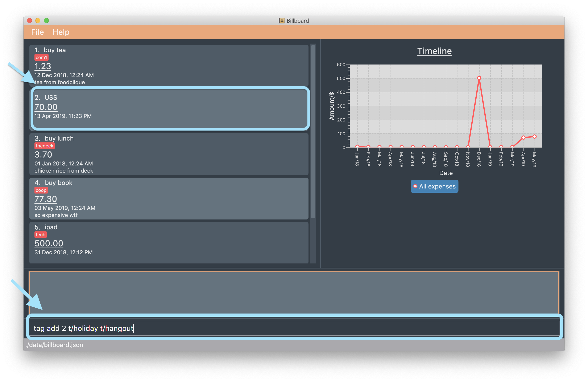
2. The result box will display the message "Added tag(s) to Expense:
Name: USS Description: Amount: 70.00 Created: 13 Apr 2019, 11:23 PM Archive Name: Tags: [[hangout], [holiday]]"
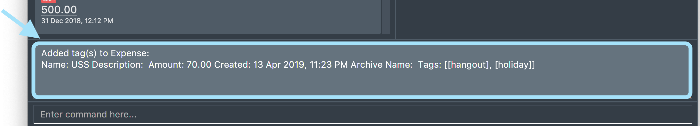
3. You could see the tags "holiday" and "hangout" in the expense at index 2.
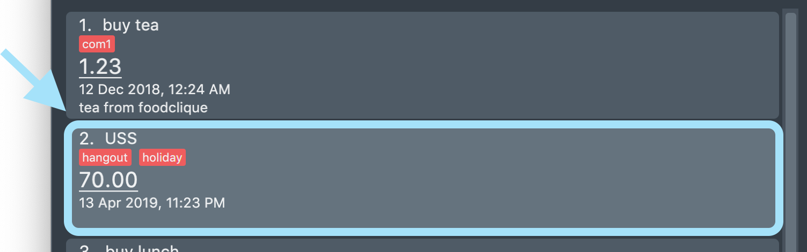
|
You are not able to add existing tags. If you input existing and non-existing tags, Billboard adds the non-existing tags only. If you input duplicate tags, Billboard adds them once. i.e Billboard does not allow duplicate tags in an expense. Example: tag add t/holiday t/holiday
|
3.3.2. Removing a tag: tag rm
This command removes your input tag(s) from the expense at the index you have specified.
Usage:
tag rm [INDEX] t/[TAG] t/<TAG>...
Example:
Lets say that you want to remove the tags "holiday" and "hangout" from the expense "USS" at index 2.
To remove the tags:
1. Type tag rm 2 t/holiday t/hangout in the command box and press enter to execute it.
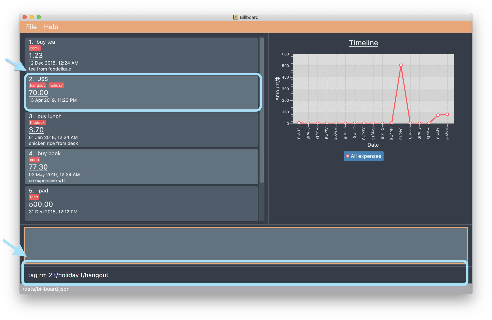
2. The result box will display the message "Removed tag(s) from Expense:
Name: USS Description: Amount: 70.00 Created: 13 Apr 2019, 11:23 PM Archive Name: Tags: []"
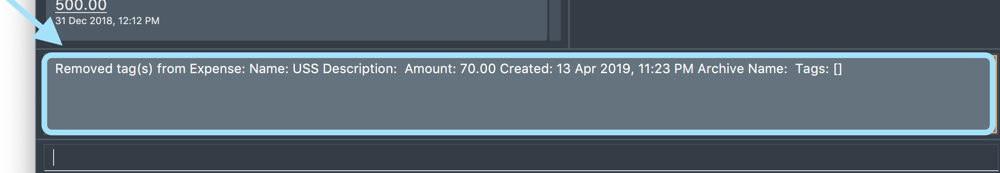
3. You could see that the expense at index 2 no longer has the tags "hangout" and "holiday".
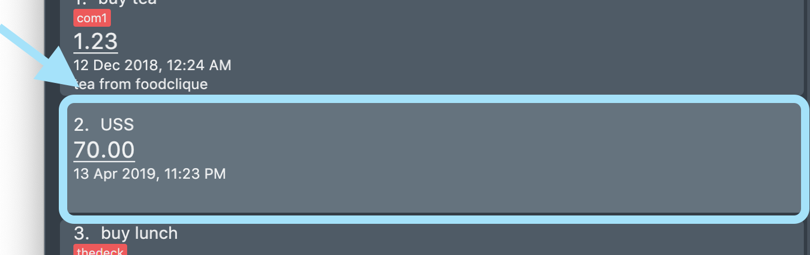
|
You are not able to remove non-existing tags. If you input duplicate tags, Billboard removes them once. Example: tag rm t/holiday t/holiday
|
3.3.3. Filtering by tag: tag filter
This command filters expenses by your input tag(s).
Usage:
tag filter t/[TAG] t/<TAG>...
Example:
Lets say that you want to filter your expenses by the tag "tech".
To filter your expenses:
1. Type tag filter t/tech in the command box and press enter to execute it.
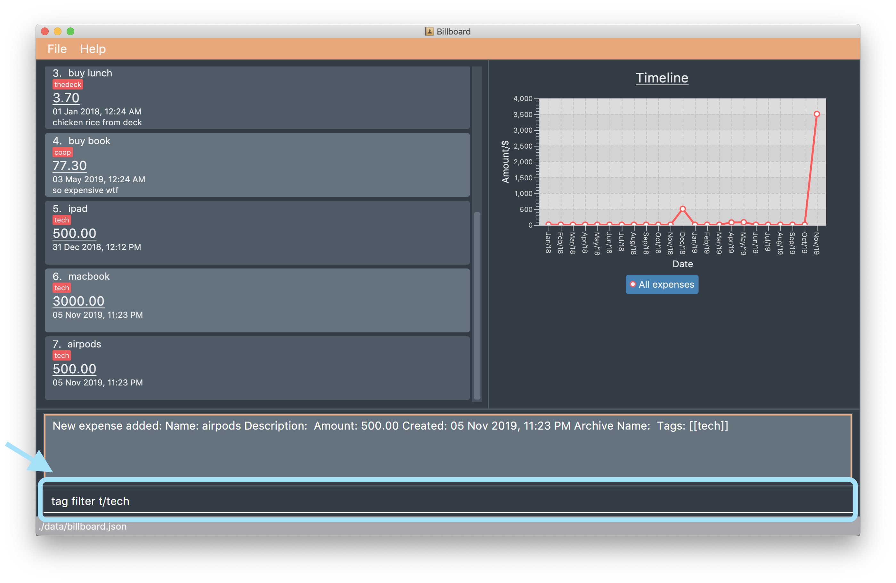
2. The result box will display the message "3 expense(s) listed!"
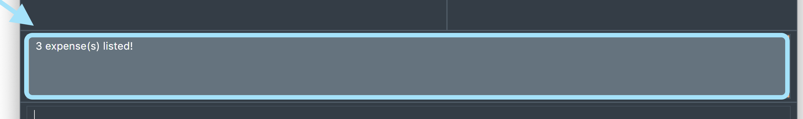
3. Billboard lists all expenses under the tag "tech".
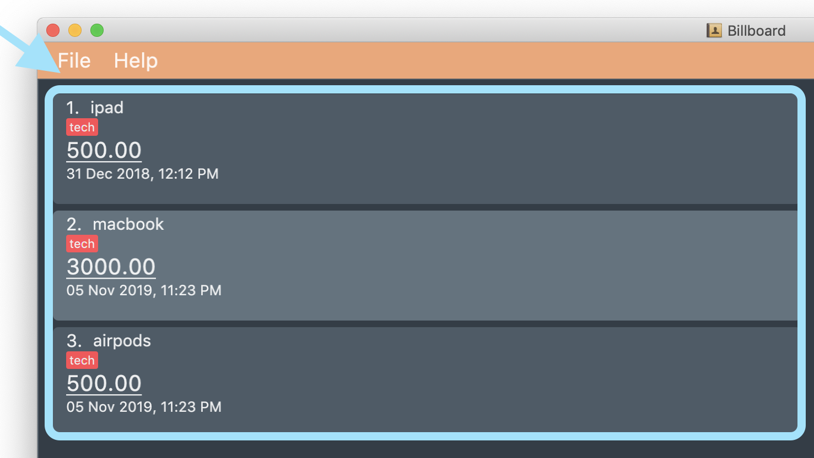
|
If you input more than one tags, Billboard lists out all expenses tagged with one or more input tags. This command allows duplicate tags as input. This command allows non-existing tags as input. After executing this command, you could edit (eg. edit, tag add etc) the filtered expenses using the displayed indexes. |
3.3.4. Listing out all the tags: tag list
This command lists out all existing tags.
Usage:
tag list
Example:
Lets say that you want to list out all existing tags.
To list them:
1. Type tag list in the command box and press enter to execute it.
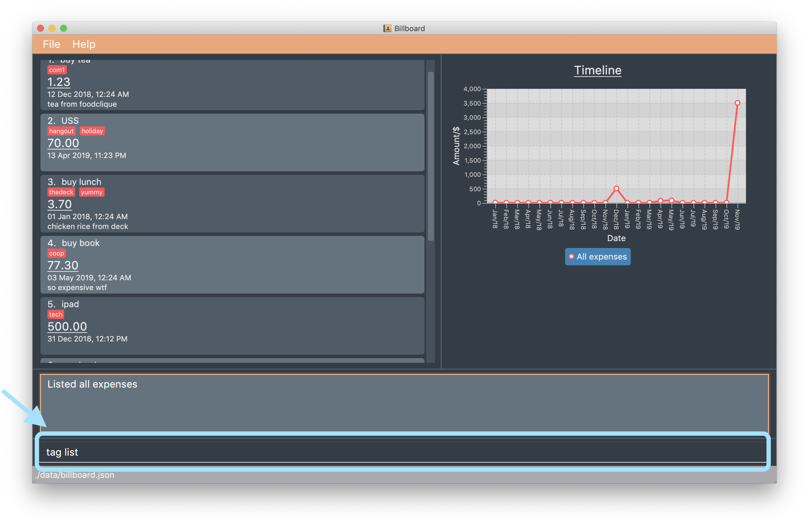
2. The result box displays a list of all existing tags.
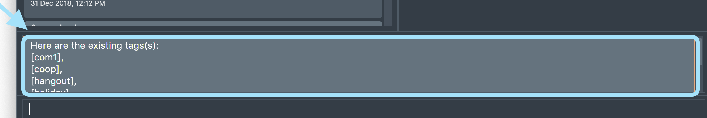
3.4. Finding expenses by attributes: find
-
Find : find
Find expenses that satisfies conditions specified in the arguments.
Usage:find [d/KEYWORD[ KEYWORD…]] [a/LOWER AMOUNT LIMIT] [al/UPPER AMOUNT LIMIT] [sd/START DATE] [ed/END DATE]
Example:
find d/lunch book a/2 al/20 sd/1/1/2019 ed/1/10/2019
Finds all expenses that contain the keyword ‘lunch’ or 'book' and amount between 2 and 20 dollars and date between 1 Jan 2019 to 1 Oct 2019 in any of its attributes.
3.5. Sorting expenses by attributes: [Coming in v2.0]
-
Sort by name:
Sort expenses by name in alphabetical order.
Usage:sort name
-
Sort by date:
Sort expenses by date from newest to oldest
Usage:sort date
-
Sort by amount
Sort expenses by amount of expense in from largest to smallest.
Usage:sort amount
3.6. Archiving past expenses: archive
This feature allows you to archive expenses. An expense is archived when you want remove it from the current list of expenses, but still want to keep a record of it and retrieve it again in the future for accounting purposes.
Archiving expenses allows you to de-clutter your current list of expenses after a long period of time. This feature offers greater flexibility in terms of expense organisation as it allows you to create multiple archives with the archive name of your choice so that you would be able to appropriately group your archived expenses.
|
Archived expenses cannot be edited. Archived expenses are not considered current and "active" expenses so you are unable to edit them. You would need to unarchive an expense first before you would be able to perform expense editing commands on it such as edit, tag add and tag remove commands.
|
Although this section of the user guide provides comprehensive information on the usage of archive commands,
you could also view the list of all supported archive commands within the application by typing the command word archive
into the command box and pressing Enter:
archive commands. You can scroll down to view the full list.The following are all the archive commands, descriptions of how they work and their usage.
Note the formatting of command parameters used in this section:
-
[INDEX]: The list index of the expense involved in the command.
-
arc/: Prefix to indicate that the text appended to it is the specified archive name. -
[ARCHIVE NAME]: Specified name of archive involved in the command. Archive name is case-sensitive and must be non-empty. Names with symbols and multiple words are accepted as well.
3.6.1. Adding an expense to an archive: archive add
This command allows you to transfer the expense at the specified index to your specified archive.
If the archive you entered does not exist, then a new archive is created before the expense is added.
Usage:
archive add [INDEX] arc/[ARCHIVE NAME]
Example:
Suppose you want to archive the expense called "joker movie tickets" to an archive called "movies".
To archive the expense:
-
Type
archive add 7 arc/moviesinto the command box, and pressEnterto execute the command:The expense "joker movie tickets" is at index 7 in the list.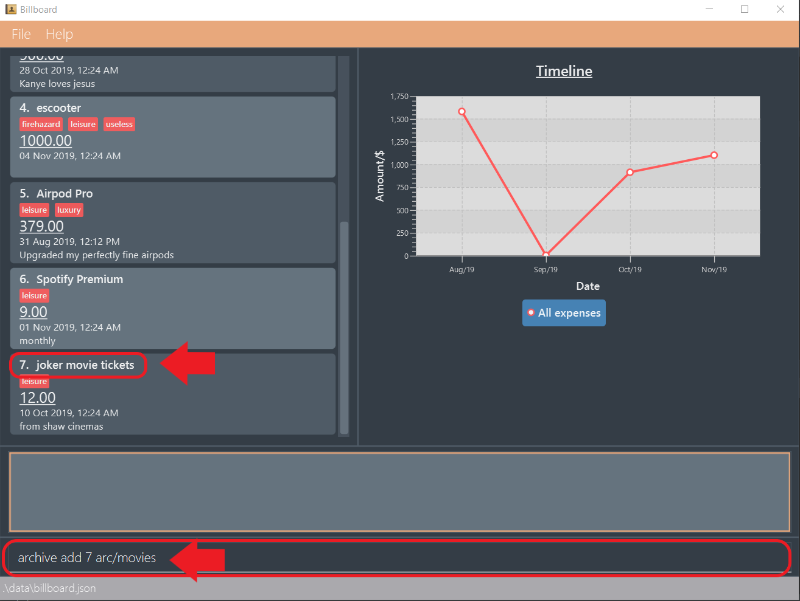
-
The next step can be split into 2 scenarios:
-
2a. There is no existing archive called "movies"
A new archive called "movies" is created before "joker movie tickets" is added to it.
The result box will display the message to indicate the archive creation and transfer of the expense: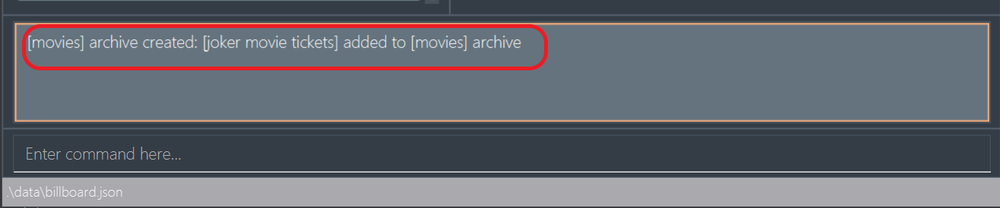 -
2b. There is an existing archive called "movies"
"joker movie tickets" is simply added to the existing "movies" archive.
The result box will display the message to indicate the transfer of the expense: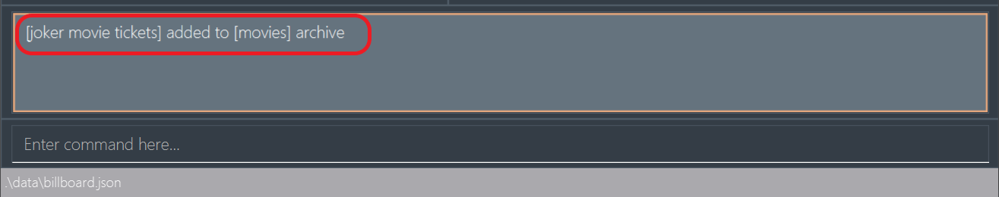
-
3.6.2. Listing out all archives: archive listall
This command informs you of all the existing archives by displaying a list of all existing archive names.
Usage:
archive listall
Example:
In the event that you cannot remember what archives you have, you could use this command to view all existing archives.
Type archive listall into the command box and press Enter, and the archive name list will be displayed in the result box as shown:
3.6.3. Listing expenses in a particular archive: archive list
This command allows you to view the list of expenses of your specified archive.
Usage:
archive list [ARCHIVE NAME]
You do not need to prepend the archive prefix arc/ to the archive name as there are no other
arguments (like [INDEX]) to be entered for this command.
|
Example:
Suppose you want to view all the expenses you have spend on movies this year. As you have kept all movie expenses in an archive called "movies", you can execute this command to bring up the expense list in "movies":
-
Type
archive list moviesinto the command box, and pressEnterto execute it: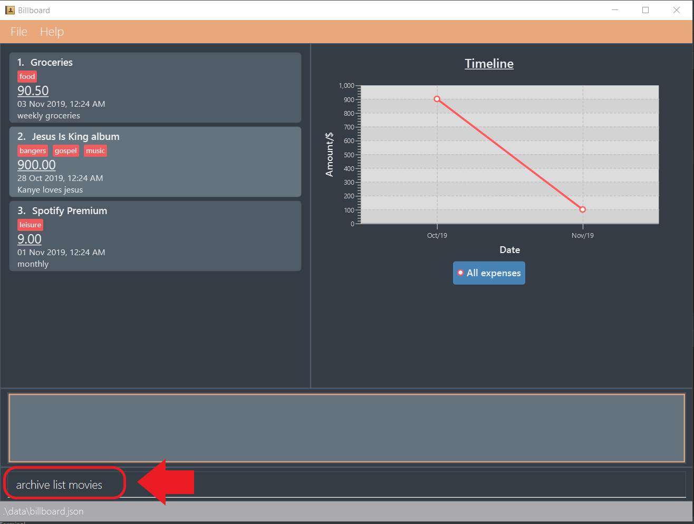 -
The displayed list will change to show the expenses in the "movies" archive and the result box will display the message "Listed all expenses from the [movies] archive":
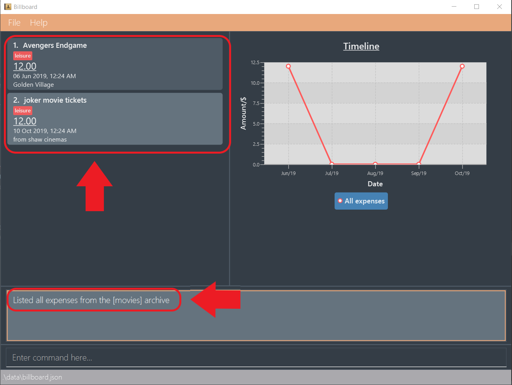
3.6.4. Deleting an archived expense: archive delete
This command allows you to delete the expense at the specified index from your specified archive.
If the archived expense you delete was the last expense in the archive, the empty archive will be deleted.
Usage:
archive delete [INDEX] arc/[ARCHIVE NAME]
Example:
Suppose you want to delete the expense "Avengers Endgame" from the "movies" archive as you know you will never need to retrieve again for future reference.
To delete "Avengers Endgame" from its archive:
-
Enter the
archive list moviescommand to display the expense list of the "movies" archive. Refer to thearchive listsection above for the diagram to execute this step. -
With the expense list of "movies" displayed, type
archive delete 1 arc/moviesand pressEnter: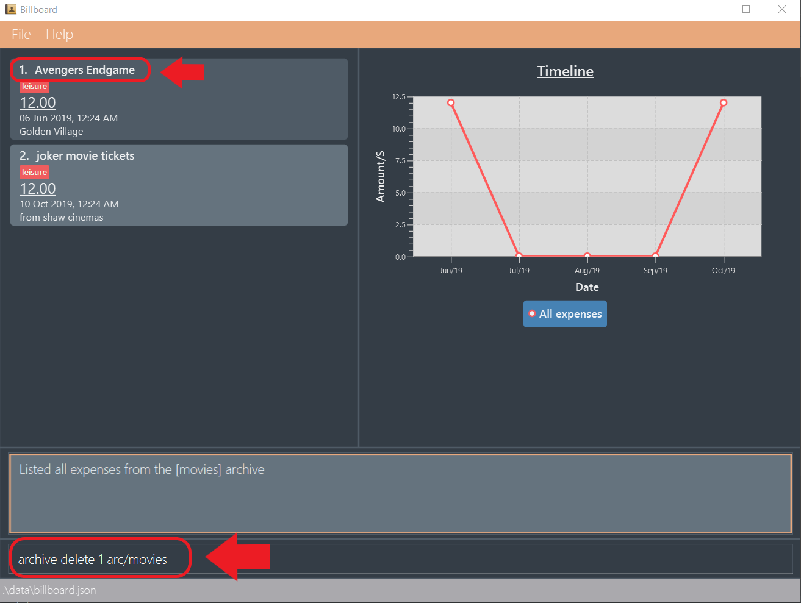Figure 3. "Avengers Endgame" expense has an index of 1 in its archive list. -
The next step can be split into two scenarios:
-
3a. "Avengers Endgame" is the only expense in the "movies" archive.
After the command is executed, "Avengers Endgame" is deleted so the "movies" archive is now empty, and will thus be deleted.
The result box will display the message that indicates the deletion of "Avengers Endgame" and "movies", and the list displayed will switch back to the main expense list: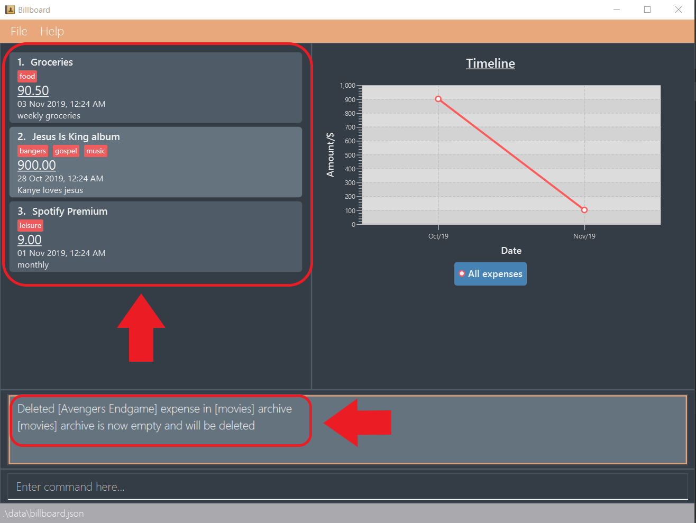Figure 4. Since the archive is deleted, the list displayed switches back to the main expense list. -
3b. "Avengers Endgame" is not the only expense in the "movies" archive.
After the command is executed, "Avengers Endgame" is deleted. As there are other expenses still in the "movies" archive, the archive is not deleted.
The result box will display the message that indicates the deletion of "Avengers Endgame", and the archive list displayed updates with the removal of "Avengers Endgame":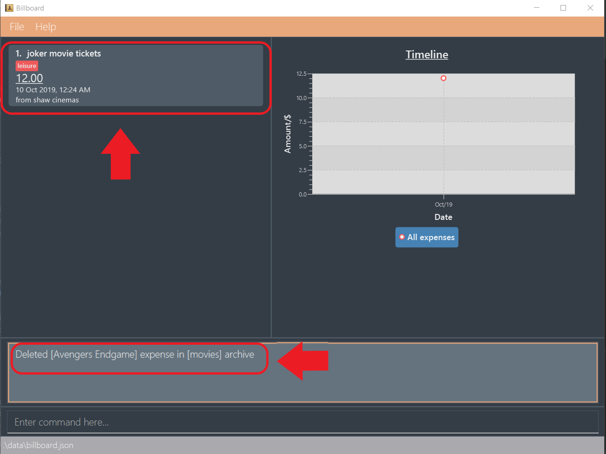Figure 5. "Avengers Endgame" is deleted and this change is immediately reflected in the archive list displayed.
-
3.6.5. Reverting an archived expense: archive revert
This command allows you to revert/unarchive the expense at the specified index from your specified archive, transferring it back to your current list of expenses.
If the archive expense you reverted was the last expense in the archive, the empty archive will be deleted.
Usage:
archive revert [INDEX] arc/[ARCHIVE NAME]
Example:
Suppose you have an expense "Airpod Pro" archived into "gadgets", but you changed your mind and decided that it should not be archived yet.
To unarchive/revert the "Airpod Pro" expense:
-
Enter the
archive list gadgetscommand to display the expense list of the "gadgets" archive. Refer to thearchive listsection above for the diagram to execute this step. -
With the expense list of "gadgets" displayed, type
archive revert 2 arc/gadgetsand pressEnter: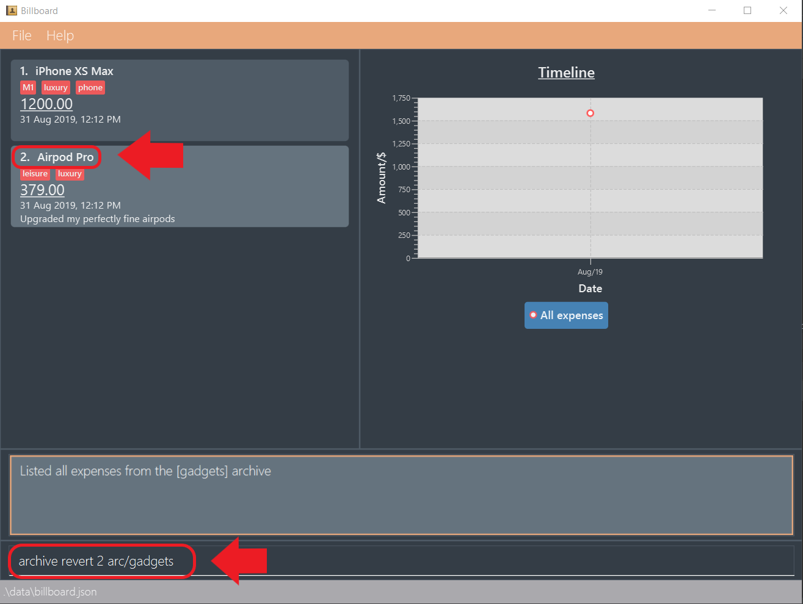Figure 6. "Airpod Pro" expense has an index of 2 in its archive list. -
The next step can be split into two scenarios:
-
3a. "Airpod Pro" is the only expense in the "gadgets" archive.
After the command is executed, "Airpod Pro" is removed from the "gadgets" archive, so the archive is now empty, and will thus be deleted.
The result box will display the message that indicates the transfer of "Airpod Pro" and the deletion of "gadgets", and the list displayed will switch back to the main expense list: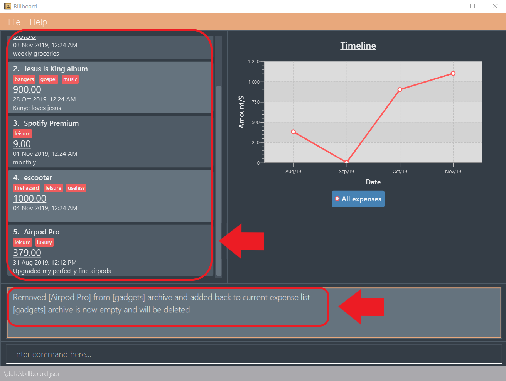Figure 7. Since the archive is deleted, the list displayed switches back to the main expense list and "Airpod Pro" can be observed to be back in the main expense list. -
3b. "Airpod Pro" is not the only expense in the "gadgets" archive.
After the command is executed, "Airpod Pro" is removed from the "gadgets" archive. As there are other expenses still in the "gadgets" archive, the archive is not deleted.
The result box will display the message that indicates the transfer of "Airpod Pro", and the archive list displayed updates with the removal of "Airpod Pro":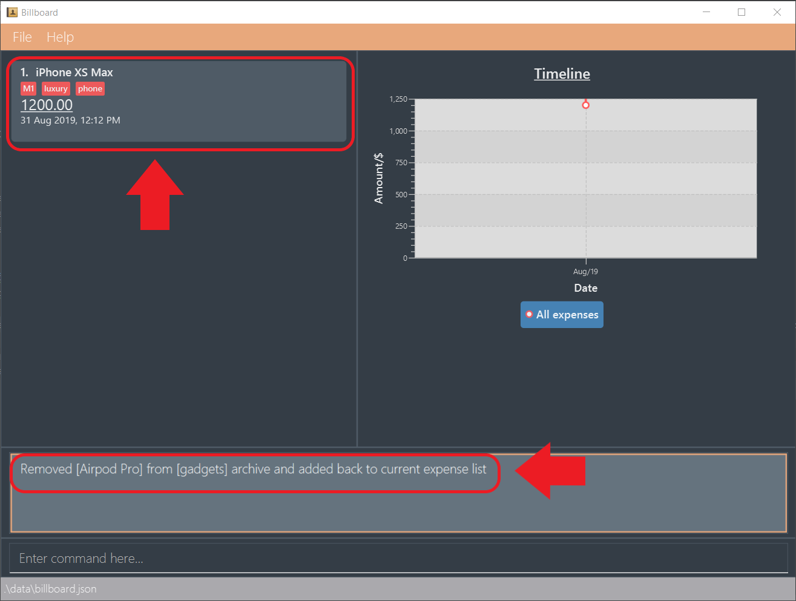Figure 8. "Airpod Pro" is unarchived and this change is immediately reflected in the archive list displayed.
-
3.7. Displaying of statistics: display-stats
Billboard has a powerful statistics display system! While trying out other features, you may have realized that the highlighted chart changes from time to time.
That is because Billboard has a fully responsive statistics display with charts that dynamically update themselves. You can simply enter any command that changes the displayed
list of expenses, such as add n/automatic stats displays are cool a/50.00, and watch as the chart updates automatically.
Should you want to view different types of statistics and customize the information you get, Billboard also supports various different types of charts, with a plethora of different customization options. Read the documentation on individual commands below to find out more.
| The options available are tailored to each specific chart type and thus, not all charts may support the same options. The individual sections for each command goes into further detail about the supported options for that command. |
With this, it becomes effortless for you to perform advanced queries on specific types of statistics! For example,
if you want to track the weekly total spending of all your expenses that contain the word "food" over a specific month, simply type display-stats timeline interval/week
followed by find d/food sd/01/01/2019 ed/01/02/2019. (Unsure about this command? Refer to Section 3.4, “Finding expenses by attributes: find” for more information).
3.7.1. Display timeline overview of expenses: display-stats timeline
You can view one or more timelines that are based on your currently displayed expenses. Upon entering the command, the statistic chart will automatically update to display a timeline configured with the options you have provided.
The expenses over a specified time period are aggregated and added as data points on the timeline, allowing you to easily keep track of your relative spending. You can customize the date interval used, as well as the groupings used to split your expenses into each individual timeline.
Usage:
display-stats timeline interval/<DATE INTERVAL = MONTH> groupby/<GROUPING = NONE>
INFO:
-
DATE_INTERVAL: Specifies the date interval to be used to aggregate the expenses by. Supported date intervals include 'day', 'week', 'month' and 'year'. The start date of each interval will always be the "logical" start, ie. the start date for "week" will always be a Monday and the start date for "month" will always be the 1st of that month. -
GROUPING: Specifies the grouping to use to group the expenses into each separate timeline. Supported groupings include "none", "tag", "month" and "day-of-week".
Example:
display-stats timeline interval/month groupby/tag
Displays timelines based on the displayed expenses. First, the expenses are divided based on tag, forming one timeline for every tag. Next, for each timeline, the total amount spent each week, starting from Monday and ending on Sunday, is totalled to form each data point. The chart may look something like this:
The options for this command, and for all other display-stats commands, are case-sensitive, ie. "Week" is not a valid substitute for "week".
|
3.7.2. Display breakdown of expenses: display-stats breakdown
You can break the displayed expenses down into smaller groups and view that breakdown as a pie chart, allowing you to compare your spending between groups. Upon entering the command, the statistic chart will automatically update to display a breakdown chart configured with the options you have provided. The total
expenses per category are totalled and displayed as each slice in the pie chart. You can customize the criteria used to split the expenses into groups.
Usage:
display-stats breakdown groupby/<GROUPING = TAG>
INFO:
-
GROUPING: Specifies the grouping to use to group the expenses into each separate slice in the pie chart. Supported groupings include "none", "tag", "month" and "day-of-week". Note that the default value forGROUPINGfor this command is not "none", but "tag". (The "none" option has limited use).
Example:
display-stats breakdown groupby/MONTH
Shows a pie chart breakdown by month of all currently displayed expenses. Within each grouping, the total expenses in that grouping are summed up, and the
total amount determines the size of its slice of the pie chart.
3.7.3. Display heatmap of expenses: display-stats heatmap
You can view a heatmap of total expenses per day for the currently displayed expenses, limited to the past year. The y-axis represents the day of the week the expense was made, while
the x-axis represents the week of the year the expense was made, with each bubble representing the expenses made on that particular day. The larger the bubble for the particular day, the higher the total expenses on that day.
This allows you to get an overall impression of your spending behaviours over the past year.
Usage:
display-stats heatmap groupby/<GROUPING = NONE>
INFO:
-
GROUPING: Specifies the grouping to use to calculate the heatmap. Expenses from different groups that occur on the same day will not be totalled, and will instead form two separate bubbles of different colors. Accepted values include: "none", "tag", "month", "day-of-week'.
Example:
display-stats heatmap groupby/none
Shows a heatmap of all currently displayed expenses, limited to a year. Since "none" grouping was specified, the expenses are not grouped and are all categorized under "All Expenses".
The displayed chart may look something like this:
3.8. Undo and Redo: undo/redo
-
Undo the previous action: undo
You can useundocommand restore the previous billboard state from state history.undowill ignore the parameter you key in.
Usage:undo
-
Redo the previous undo action: redo
You can useredocommand to redo a previously undone command and restore undone billboard state from state history.redowill ignore the parameter you key in.
Usage:redo
3.9. Viewing History: history
-
View the past command history: history
You can view all previous command histories by usinghistorycommand.historywill ignore the parameter you key in.
Usage:history
3.10. Up and down key: ↑/↓
-
Get the previous entered command: ↑
By pressing the Up(↑) key, you can get the previous command entered in the command history on the text field.
-
Get the sequential entered command: ↓
By pressing the Down(↓) key, you can get the sequential command entered in the command history on the text field.
3.11. Viewing help: help
3.11.1. Help list of complete set of commands: help
Shows the complete list of commands and instructions/description on how to use them.
Usage:
help
+
3.12. Exporting data: [Coming in v2.0]
You will be able to export their expense data using the command export f/[FORMAT], where format refers to the type of export file format
you wish to use. Formats that are intended to be supported include .csv files, .json files, as well as PDF documents.